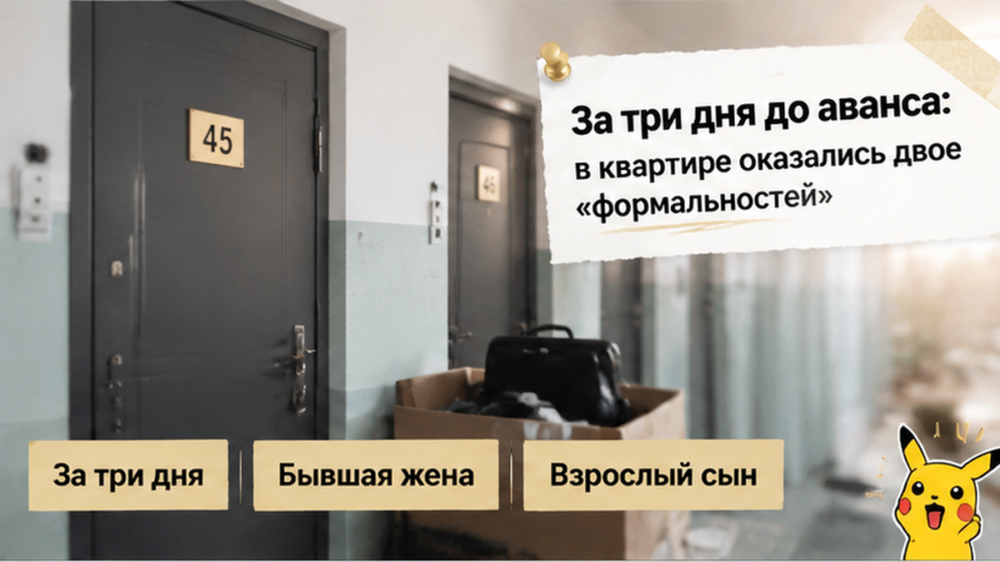
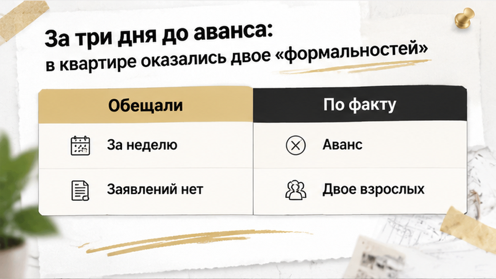
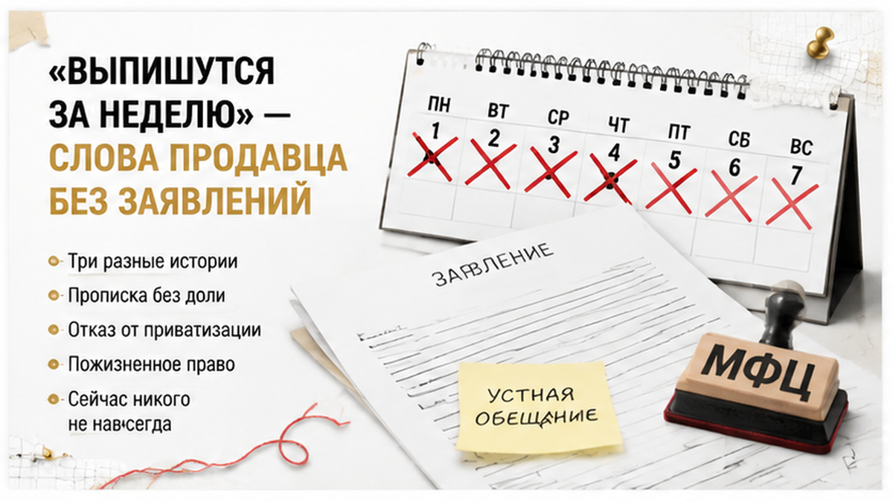
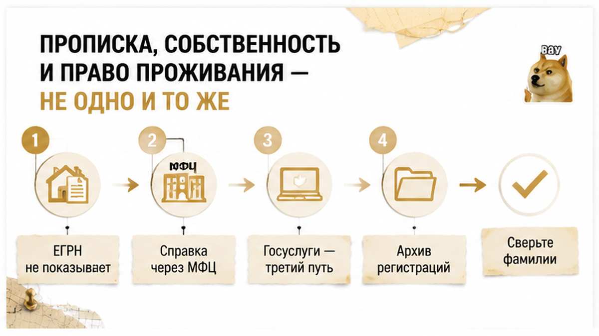
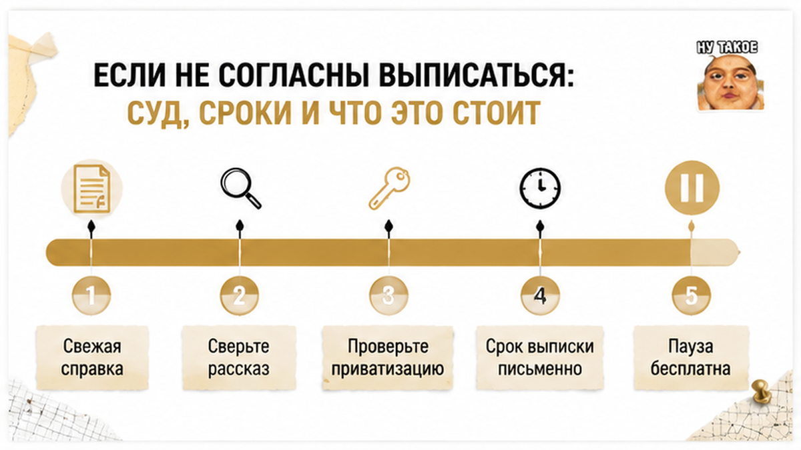

Сделка встала не из-за цены, не из-за банка и не из-за торга. Из-за двух человек, которых в квартире не было, — а в бумагах они были.
Конец августа, Тюмень, обычная вторичка. Покупатели смотрели квартиру дважды, договорились по сумме, назначили день аванса — всё шло тем спокойным темпом, когда уже мысленно расставляешь мебель. За три дня до передачи денег выяснилось, что в квартире зарегистрированы двое: бывшая жена продавца и его взрослый сын, и ни один из них не собственник. Продавец пожал плечами: формальность, выпишутся за неделю. Покупатели аванс не внесли — деньги не передавались, сделку остановили прямо на переговорах. И это, если по-честному, самый дешёвый способ, каким такая история вообще может закончиться.
Сразу оговорюсь: это собирательный тюменский случай, а не репортаж с фамилиями, адресом и номером дела. Я сложил в него то, что вижу в работе регулярно, — и разберу по шагам, потому что ошибка здесь стоит не аванса, а месяцев после покупки.
Меня зовут Святослав Шакин, я риэлтор в Тюмени, проект The Риэлтор. Разбираю такие ситуации по документам, а не по обещаниям продавца.
Telegram: t.me/Tyumen_Rieltor — пишу туда, что реально всплывает на тюменской вторичке.
MAX: max.ru/id561413315447_biz — если удобнее там.


Начиналось всё образцово. Квартира на вторичке, собственник один, выписка ЕГРН без обременений, ипотека погашена. По праву собственности вопросов не возникало — и именно эта чистота в таких историях усыпляет лучше любого снотворного.
Справку о зарегистрированных лицах запросили отдельно и поздно, уже ближе к дате аванса. В ней и обнаружились двое: бывшая супруга продавца и его взрослый сын. В составе собственников — нет. Только регистрация по месту жительства.
Здесь надо развести два слова, которые в разговоре продавца обычно слипаются в одно. Собственник — тот, кто указан в ЕГРН: распоряжается квартирой, подписывает договор, получает деньги. Зарегистрированный — человек, который по документам учтён проживающим по адресу; прописка сама по себе не даёт ему доли и не мешает Росреестру зарегистрировать переход права.
То есть формально сделку с такими зарегистрированными провести можно. Универсального требования снять всех с учёта до подписания договора закон не устанавливает — стороны вправе отдельно договориться о сроке выписки и зафиксировать это в документах. Проблема не в том, что переход права «не пропустят». Проблема в том, что покупатель получает квартиру вместе с чужим правом пользования — и разбираться с ним будет уже он сам, новый собственник.
Поэтому «в Росреестре всё чисто» и справка о зарегистрированных — два разных документа про два разных риска. Первый отвечает на вопрос «чья квартира». Второй — на вопрос «кто в ней числится живущим». Смешивать их дорого.

Дальше был разговор, который я слышу почти дословно в каждом втором таком случае. Продавец не юлил, не скрывал, не нервничал: «Да, зарегистрированы. Давно не живут. Выпишутся за неделю, вопрос закрытый».
Проверять в такой момент нужно не интонацию, а механику. Добровольное снятие с регистрационного учёта делается либо по заявлению самого гражданина, либо автоматически — когда человек регистрируется по новому адресу и с прежнего его снимают в предусмотренном законом порядке. Ни в одном из вариантов продавец за них расписаться не может. Это их заявления, их визит, их новый адрес.
Для одного человека процедура и правда укладывается в несколько рабочих дней. Но «за неделю» в устах продавца — это не срок, это прогноз чужого поведения. Тут нужно, чтобы двое взрослых людей, один из которых бывшая супруга, синхронно нашли время, подали заявления и были сняты с учёта.
Бывшая жена может быть совершенно не против — и не дойти до МФЦ два месяца. Взрослый сын может быть в другом городе. Ни один из этих сценариев не злой умысел. Он просто не совпадает с датой вашей сделки.
На вопрос, подавали ли они уже заявления, ответа не было. Ни копий, ни расписок, ни листков убытия, ни регистрации по новому адресу — только слово. Ровно та же конструкция, что и в истории, где продавец показал справку о закрытии ипотеки, а банк всё ещё держал залог: обещание опережало документ.
И вот он, момент выбора, который потом определяет всё. Обещание можно принять на веру — а можно превратить в условие: заявления поданы, снятие подтверждено свежей справкой, и только после этого аванс. Разница между двумя вариантами измеряется не вежливостью, а тем, у кого останутся деньги, пока вопрос не решён.
Покупатели выбрали второй вариант. В назначенный день аванс не внесли, деньги продавцу не передавали, договорились вернуться к разговору, когда будет свежая справка без этих двоих.
Со стороны это выглядит как сорванная сделка. По сути это единственный этап, где у покупателя ещё есть рычаг. До передачи денег он просто прекращает переговоры и уходит: ни исков, ни судебного выселения, ни расходов. После аванса разговор меняется — начинаются условия договора, сроки, споры о том, кто виноват в просрочке. После полной оплаты и регистрации перехода права снимать с учёта чужих людей придётся уже новому собственнику: за свой счёт и своим временем.
Цена этой паузы — несколько недель ожидания. Цена пропущенной паузы — история вроде той, где расписку на квартиру написали, а денег на счёте не оказалось: проверку отложили «на потом», деньги ушли раньше, чем всплыли факты.
И деталь, которая в этой истории сыграла за покупателей: продавец не упёрся. Он согласился, что справку надо обновить. Адекватный собственник, которому нечего прятать, почти всегда соглашается — для него это неделя, а не катастрофа. А вот сопротивление на этом шаге само по себе информативнее любой справки.

Путаница почти всегда начинается с одного слова. «Прописан» звучит так, будто человек чем-то владеет. Будто у него доля, ключи и право голоса.
На самом деле в одной квартире живут три разные юридические истории, и пересекаются они не всегда.
Собственность — запись в ЕГРН: кто там указан, тот распоряжается квартирой. Регистрация — учёт проживания: доли не даёт, сделку не блокирует, но после перехода права зарегистрированные остаются по адресу — уже у нового собственника. Право пользования — третья история: пункт 2 статьи 292 ГК РФ связывает переход права с прекращением права пользования членами семьи прежнего собственника, но на практике спорные случаи оценивают отдельно, иногда через суд.
Для бывшего супруга логика обычно простая: семейные отношения прекращены — прекращается и право пользования. Если нет соглашения между сторонами или иных обстоятельств, которые это право сохраняют.
С взрослым сыном тоже нет никакой презумпции пожизненного проживания. Обычная регистрация не означает, что человек может жить в квартире всегда.
А вот ради чего я, собственно, и прошу справку заранее — это те, кто отказался от участия в приватизации. За таким человеком может сохраняться пожизненное право пользования. Смена собственника его не отменяет. Вы покупаете квартиру, а вместе с ней — жильца, которого не выселить.
Похожие последствия дают завещательный отказ и другие основания. Из обычной справки о текущих зарегистрированных они не следуют. Вообще никак.
И есть тихая группа, о которой вспоминают в последнюю очередь: временно снятые с учёта. Сейчас человека в справке нет — а при определённых обстоятельствах он может вернуться.
«Сейчас никого» и «никого не будет» — это два разных утверждения. Обычный покупатель их не различает. Профи различает всегда.
«В Росреестре всё чисто» на просмотре звучит как финальный аргумент. Как будто после этой фразы вопросы закончились.
Она означает ровно одно: по выписке видно собственников и обременения. Сведения о зарегистрированных лицах в этот документ не входят вообще. Их получают отдельно, другим запросом.
Базовая выписка ЕГРН может не показать людей с самостоятельным или сохраняющимся правом проживания. Это не дефект документа. Это его назначение. Похожая логика уже разбиралась в истории о том, как одобренная ипотека упёрлась в строку ЕГРН: чистая выписка не заменяет отдельную проверку.
Домовые книги отменены с 2018 года. Сейчас справку запрашивают через МФЦ, управляющую организацию или ТСЖ, а также через Госуслуги — в Тюмени работают все три маршрута, обычно достаточно, чтобы запрос делал сам собственник.
Отдельно я прошу архивную историю регистраций, если у квартиры сложное прошлое: приватизация, наследство, размены, несколько смен собственников подряд.
Текущая справка показывает срез на сегодня. Архив показывает, кто был зарегистрирован раньше и в какой момент выбыл. Если приватизация была — нужно установить, кто в ней участвовал и кто от неё отказался. Именно там прячется пожизненное право пользования.
Дальше идёт самое скучное и самое полезное действие в проверке. Справку нужно сверить с тем, что рассказывает продавец. С документами о составе семьи. С историей приватизации.
Расхождение в одну фамилию меняет всю картину сделки.
Если историю получить не удаётся — доступ ограничен, УК тянет, архив не выдают — это не повод для паники. Это повод не ускорять аванс.
Пока деньги не переданы, отсутствующий документ стоит покупателю только времени.

Пока деньги не переданы, у покупателя есть простой выход — встать и уйти. После сделки выход тоже один, но длинный.
Если зарегистрированный не подаёт заявление и не встаёт на учёт по новому адресу, новый собственник идёт в суд: признать человека утратившим право пользования жилым помещением. Не «сходить в паспортный стол с договором купли-продажи». Именно суд. Переход права собственности сам по себе чужую регистрацию не аннулирует.
Требование это неимущественное. В материалах, на которые я опирался, госпошлина по нему указана в размере 3 000 ₽ с учётом изменений, действующих с сентября 2025 года. Цифру перед подачей сверяйте по действующей редакции Налогового кодекса — она меняется чаще, чем хотелось бы.
Но пошлина здесь — самая мелкая строка в смете. Дороже юрист. Ещё дороже время. И совсем дорого то, что квартира на этот момент уже ваша: ипотека платится, коммуналка начисляется, а вопрос «когда я реально заеду» висит без ответа.
По срокам ориентир — три-шесть месяцев. Ориентир, не гарантия. Заседание перенесли, ответчика не нашли по адресу, пошла апелляция — и полгода спокойно превращаются в год. Обратите внимание на деталь: ответчика не нашли по адресу, где он зарегистрирован в вашей квартире.
После вступления решения в силу с учёта снимают органы МВД на основании судебного акта; по описанному в нормативных материалах порядку это должно происходить не позднее следующего рабочего дня после поступления документов. Тоже сверяйте по действующей редакции.
Юридическая логика в таких спорах чаще на стороне покупателя. «Чаще» — не «автоматически». Спорные случаи суд оценивает отдельно, и оценивать он будет уже вашу квартиру, за ваш счёт и в ваши сроки. А там, где был отказ от приватизации или завещательный отказ, иск может не сработать вовсе: эти основания старше вашего договора.
И два бытовых хвоста, про которые спрашивают реже, чем стоило бы. Регистрация посторонних может влиять на начисление коммунальных платежей по нормативу, если в квартире нет приборов учёта, — но долг по ЖКУ в любом случае взыщут с собственника, то есть с вас. И банки: единого законодательного запрета нет, однако конкретный банк вполне может попросить закрыть вопрос до сделки. Тогда пауза будет уже не вашим решением, а условием кредитора.
Теперь то, ради чего вся история. Порядок простой, и занимает он не недели, а несколько дней.
| Что проверяем | Откуда берём | Что настораживает | Решение до аванса |
|---|---|---|---|
| Собственники и обременения | Выписка ЕГРН | Состав собственников не совпадает с рассказом продавца | Пауза, уточняющие документы |
| Кто зарегистрирован сейчас | Справка через МФЦ, УК/ТСЖ или сервисы Госуслуг | «Дам позже», «там всё чисто» на словах | Без справки аванс не вносим |
| Приватизация и отказавшиеся | Документы о приватизации, архивная история регистраций | Историю получить невозможно или она обрывается | Отдельная проверка до денег |
| Временно снятые с учёта | Архивная выписка по регистрациям | Пробелы в периодах, необъяснённые снятия | Запрос расширенных сведений |
| Срок и порядок выписки | Условие договора, заявления самих зарегистрированных | Только устное обещание «за неделю» | Письменная фиксация или стоп |
Что меняется после покупки: список вопросов остаётся тот же, но задаёте вы их уже как собственник — с задержкой заезда, счётом от юриста и судебными издержками. Разница между «мы подождали три дня» и «мы теперь истец» — это другой порядок цен и совсем другой порядок нервов. Если по вашему объекту непонятно, какие именно документы просить, напишите или позвоните — +7 922 001 65 05, разберём состав проверки по конкретной квартире.
Продавец клянётся, что прописанные уйдут сами за неделю — вы бы поверили и внесли аванс? Напишите в комментариях, чем закончилось у вас.
Сомневаетесь по конкретной квартире в Тюмени — покажите документы до аванса, а не после. Пишите в Telegram: @Tyumen_Rieltor или в MAX: Святослав Шакин, The Риэлтор.
Вторичку в Тюмени покупают каждый день, и покупают нормально. Прописанные родственники продавца — не приговор объекту, а вопрос с документальным ответом: справка, приватизация, заявления, срок.
Покупатели из этой истории ничего не «сорвали». Они оставили себе ручку: пока аванс не внесён, решаете вы — идти дальше или подождать. Это стоит трёх дней, а не трёх заседаний.
Материал проверен: Святослав Шакин, личный риэлтор в Тюмени. Ориентир для покупателя, не индивидуальная юридическая консультация.